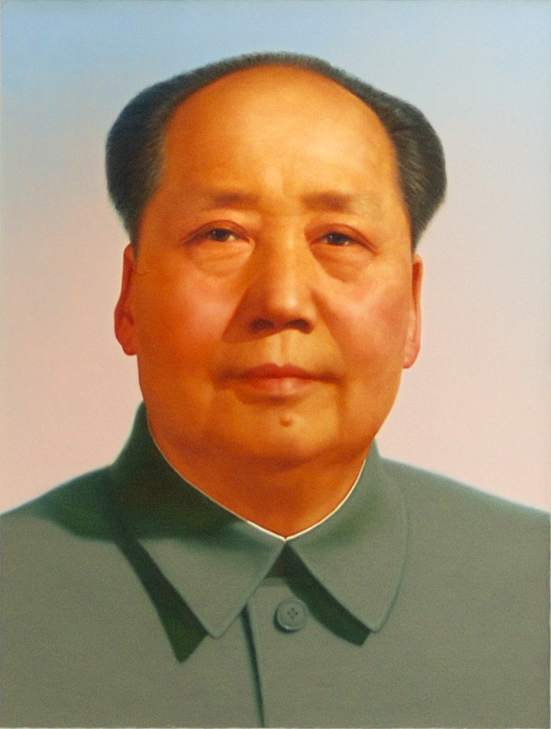

Top Five Members of the Communist Party
1) Chairman Mao
Quite frankly, we would have made Chairman Mao all ten members on the list before we realised that there is no way that he can stoop so low as to be second best. He has many accomplishments: the Cultural Revolution, the Barefoot Doctors and the successful rule of China for many years (no US President can claim to have ruled for as long as him). The greatest thing that he did for the Chineses people, though, was to just exist. To behold Chairman Mao is to behold the greatest glory to have graced the Earth. He may no longer be alive in the literal sense but he will always be alive in our hearts.
2) President Xi Jinping
He is by far the greatest living member of the Party: he has restored the pride of the Chinese people in a way not seen since Chairman Mao. He has unified China by imprisoning people who speak out against him, initiating a Social Credit system that awards people for being loyal to the party and disincentivises disloyalty and removing Presidential term limits. May he rule for many more years to come.